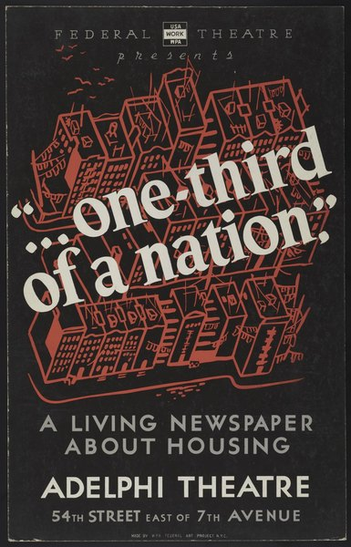
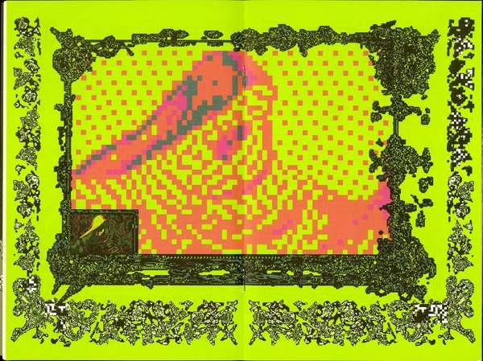
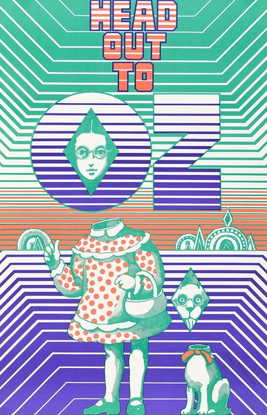

CRVI000832Seymour Chwast - Cars IV
Lithograph · calendar page · 30 × 48 cm · 1996
Lithograph · calendar page · 30 × 48 cm · 1996

CRVI000876John Provencher - Tracing Nature’s DNA
Bloomberg Businessweek, October 2023 · pages 48–49 · 2023
Bloomberg Businessweek, October 2023 · pages 48–49 · 2023

CRVI000584Irving Spellings - …one-third of a nation…
A Living Newspaper about housing · Adelphi Theatre, New York · between 1936 and 1939
A Living Newspaper about housing · Adelphi Theatre, New York · between 1936 and 1939

CRVI000875John Provencher - [Bloomberg, weather]
Bloomberg Businessweek
Bloomberg Businessweek

CRVI000874John Provencher - The Russian Bot Army That Conquered Online Poker
Bloomberg Businessweek, 20 September 2024 · 2024
Bloomberg Businessweek, 20 September 2024 · 2024

CRVI000587Unknown - Mastering the Expense Account Diet
New York, September 1, 1969 · 1969
New York, September 1, 1969 · 1969

CRVI000599Unknown - 1977: It All Happened Here. Where Else?
New York, December 26, 1977 · 1977
New York, December 26, 1977 · 1977

CRVI000820Seymour Chwast - DesignTalk Lectures
Mohawk · 61 × 89 cm · 1996
Mohawk · 61 × 89 cm · 1996

CRVI000600Unknown - When Was the Last Time You Called Your Mother?
New York, May 7, 1979 · 1979
New York, May 7, 1979 · 1979

CRVI000601Unknown - Replacing the Irreplaceable
New York, October 22, 1979 · 1979
New York, October 22, 1979 · 1979

CRVI000605Unknown - What Would Freud Think?
New York, March 31, 1986 · 1986
New York, March 31, 1986 · 1986

CRVI000873John Provencher - [On, Clubhouse Paris]
On · Clubhouse Paris
On · Clubhouse Paris

CRVI000607Unknown - Spying on Spy
New York, April 17, 1989 · 1989
New York, April 17, 1989 · 1989

CRVI000586Unknown - This Machine Swallows Buses While Going 60 mph
New York, February 24, 1969 · 1969
New York, February 24, 1969 · 1969

CRVI000612Unknown - Scenes From New York's Therapy Crisis
New York, October 20, 1997 · 1997
New York, October 20, 1997 · 1997

CRVI000595Unknown - TV vs. the Pols: Who's Using Whom?
New York, June 26, 1972 · 1972
New York, June 26, 1972 · 1972

CRVI000602Unknown - Living With the Computer
New York, January 9, 1984 · 1984
New York, January 9, 1984 · 1984

CRVI000594Unknown - Money Advisor: How to Borrow Money… Cleverly
New York, January 24, 1972 · 1972
New York, January 24, 1972 · 1972

CRVI000591Unknown - Doctor Feelgood, You Make Me Feel So Good. Are You Sure It's All Right?
New York, February 8, 1971 · 1971
New York, February 8, 1971 · 1971

CRVI000825Seymour Chwast - Canto XVIII, PPG #52
Push Pin Graphic #52 · 46 × 71 cm · 1967
Push Pin Graphic #52 · 46 × 71 cm · 1967

CRVI000588Unknown - The Men of Women's Liberation Have Learned Not to Laugh
New York, May 18, 1970 · 1970
New York, May 18, 1970 · 1970

CRVI000592Unknown - Can Anybody Handle the Soaring Costs of Private Schools?
New York, March 29, 1971 · 1971
New York, March 29, 1971 · 1971

CRVI000770Paula Scher - Best of Jazz
Lithograph · 91.1 × 68.9 cm · 1979
Lithograph · 91.1 × 68.9 cm · 1979

CRVI000816Seymour Chwast - Blues Project
Offset lithograph · 102.2 × 75.2 cm · 1968
Offset lithograph · 102.2 × 75.2 cm · 1968

CRVI000603Unknown - Your Telephone Survival Guide
New York, April 23, 1984 · 1984
New York, April 23, 1984 · 1984

CRVI000596Unknown - Special 16-Page Section for New York Kids
New York, June 25, 1973 · 1973
New York, June 25, 1973 · 1973

CRVI000593Unknown - Some Thoughtful Parents Care Enough About Their Kids' Education to Send Them to Public Schools
New York, November 8, 1971 · 1971
New York, November 8, 1971 · 1971

CRVI000831Seymour Chwast - I, Claudius
Mobil Masterpiece Theatre · 76 × 118 cm · 1976
Mobil Masterpiece Theatre · 76 × 118 cm · 1976

CRVI000834Seymour Chwast - The Left-Handed Designer
Jacket panel · Harry N. Abrams · 1985
Jacket panel · Harry N. Abrams · 1985

CRVI000609Unknown - First, We Kill All the Computers
New York, July 24, 1995 · 1995
New York, July 24, 1995 · 1995

CRVI000765Paula Scher - The Diva is Dismissed
Serigraph · 116.8 × 76.5 cm · 1994
Serigraph · 116.8 × 76.5 cm · 1994

CRVI000821Seymour Chwast - Nicholas Nickleby
Mobil Showcase Network · 76 × 118 cm · 1983
Mobil Showcase Network · 76 × 118 cm · 1983

CRVI000827Seymour Chwast - A Tribute to Arthur Freed
Gallery of Modern Art, New York · 1967
Gallery of Modern Art, New York · 1967

CRVI000585Unknown - The Future of the Democratic Party
New York, November 4, 1968 · 1968
New York, November 4, 1968 · 1968

CRVI000768Paula Scher - Blade to the Heat
The Public Theater · 74 × 112 cm · 1994
The Public Theater · 74 × 112 cm · 1994

CRVI000764Paula Scher - The Public Theater, 95–96 Season
Lithograph · 152.4 × 114.3 cm · 1995
Lithograph · 152.4 × 114.3 cm · 1995

CRVI000589Unknown - Subway Roulette: The Game Is Getting Dangerous
New York, June 15, 1970 · 1970
New York, June 15, 1970 · 1970

CRVI000869John Provencher - The Yellow Wallpaper
A24 Zine, issue 33 · guest-edited by Kane Parsons · 2026
A24 Zine, issue 33 · guest-edited by Kane Parsons · 2026

CRVI000870John Provencher - The Yellow Wallpaper
A24 Zine, issue 33 · inside spread · 2026
A24 Zine, issue 33 · inside spread · 2026

CRVI000608Unknown - Is Your Cat Contemplating Suicide?
New York, April 24, 1995 · 1995
New York, April 24, 1995 · 1995

CRVI000766Paula Scher - Him
Screenprint · 116.8 × 76.5 cm · 1994
Screenprint · 116.8 × 76.5 cm · 1994

CRVI000871John Provencher - Will Larry Ellison Be the Face of the A.I. Bubble?
The New York Times Magazine, August 16, 2026 · 2026
The New York Times Magazine, August 16, 2026 · 2026

CRVI000872John Provencher - [NBA × Google]
Installation for NBA × Google
Installation for NBA × Google

CRVI000817Seymour Chwast - The South, PPG #54
Push Pin Graphic #54 · 21.6 × 21.6 cm · 1969
Push Pin Graphic #54 · 21.6 × 21.6 cm · 1969

CRVI000833James McMullan - Head Out to Oz
Push Pin Graphic #52 · 71 × 46 cm · 1967
Push Pin Graphic #52 · 71 × 46 cm · 1967

CRVI000597Unknown - Why Everybody's Talking About Gossip
New York, May 3, 1976 · 1976
New York, May 3, 1976 · 1976

CRVI000824Seymour Chwast - Master & Dog
Push Pin Graphic #57 · 1972
Push Pin Graphic #57 · 1972

CRVI000828Seymour Chwast - Penny Pitch
68.6 × 53.3 cm · 1967
68.6 × 53.3 cm · 1967

CRVI000826Seymour Chwast - The Nose #11, Tricks
The Nose · 18 × 28 cm · 2005
The Nose · 18 × 28 cm · 2005

CRVI000598Unknown - We Have Seen the Future and It's New Jersey
New York, June 20, 1977 · 1977
New York, June 20, 1977 · 1977

CRVI000604Unknown - Dan on the Run
New York, February 3, 1986 · 1986
New York, February 3, 1986 · 1986

CRVI000590Unknown - Diary of a Suburban Rabbi
New York, January 18, 1971 · 1971
New York, January 18, 1971 · 1971

CRVI000613Ivan Chermayeff, Thomas Geismar - Whitney Museum of American Art, 75th & Madison, Open Free Tuesday Evenings
Lithograph, 116.8 × 76.1 cm · 1977
Lithograph, 116.8 × 76.1 cm · 1977

CRVI000769Paula Scher - Venus
The Public Theater · 1996
The Public Theater · 1996

CRVI000606Unknown - Manners for the '80s
New York, December 14, 1987 · 1987
New York, December 14, 1987 · 1987

CRVI000818Seymour Chwast - The South, PPG #54
Push Pin Graphic #54 · 21.6 × 21.6 cm · 1969
Push Pin Graphic #54 · 21.6 × 21.6 cm · 1969

CRVI000767Paula Scher - Simpatico
The Public Theater · 1994
The Public Theater · 1994

CRVI000610Unknown - The Coming Republican Crack-Up
New York, March 4, 1996 · 1996
New York, March 4, 1996 · 1996

CRVI000823Seymour Chwast - Seymour Poster
AIGA / NY · 56 × 86 cm · 2009
AIGA / NY · 56 × 86 cm · 2009

CRVI000611Unknown - Suddenly, Everything Is Stainless Steel.
New York, October 14, 1996 · 1996
New York, October 14, 1996 · 1996